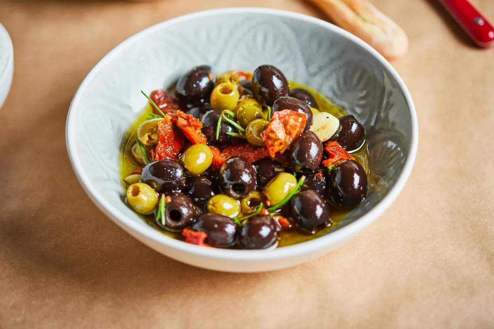
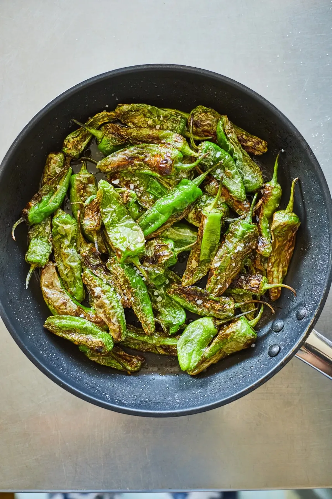
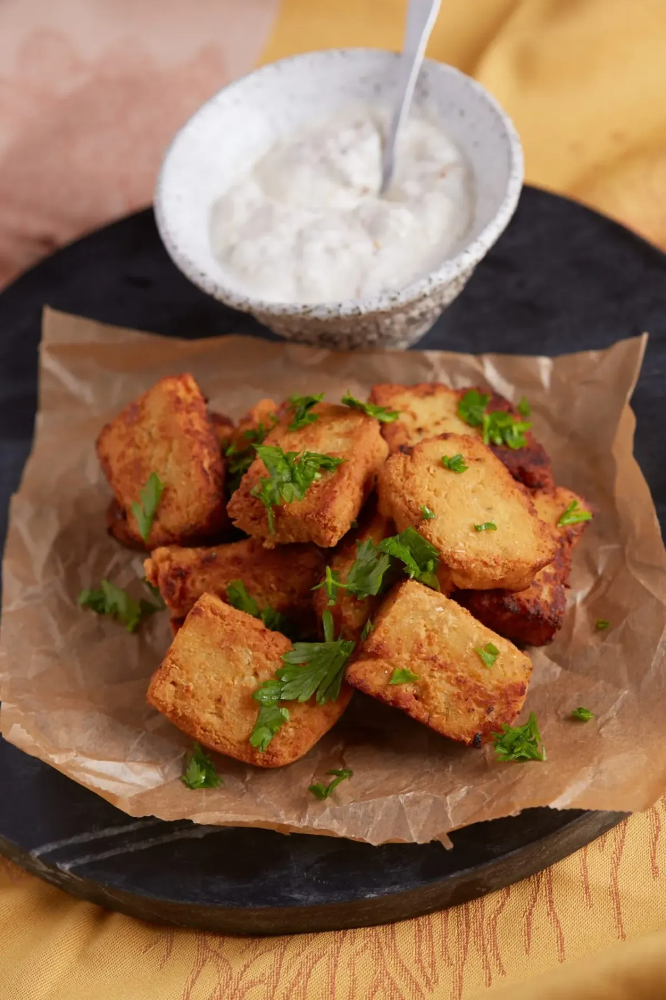

Marinált olivabogyó
Ez a mediterrán előétel vagy borkorcsolya tökéletes felütése bármilyen étkezésnek. A marinálás lényege, hogy a jó minőségű olívaolaj és a friss fűszernövények teljesen átjárják a bogyókat, így egy sokkal intenzívebb, gazdagabb ízvilágot kapunk.

Padron paprika
Ez a klasszikus spanyol tapas (pimientos de Padrón) zsenialitása az egyszerűségében rejlik. A fogás gasztronómiai izgalmát egy spanyol mondás tartja fent: „Pimientos de Padrón, unos pican y otros no” – azaz a Padrón paprika olyan, hogy néhány csíp, a többi nem. Körülbelül minden tizedik darab tartogat egy kis extra pikáns meglepetést.

Panelle
A panelle Palermo ikonikus utcai étele (street food), amely kiválóan működik modern éttermekben vegán és gluténmentes előételként vagy borkorcsolyaként is. Lényegében egy fűszeres csicseriborsó-puding, amit kihűlés után formára vágnak, majd tűzforró olajban aranybarnára sütnek.
